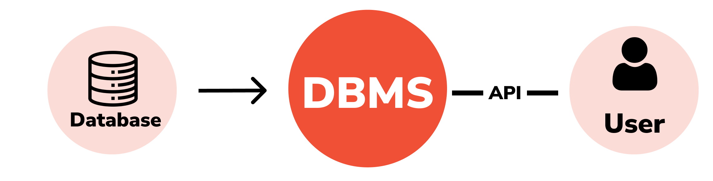

DBMS
Con il termine di DBMS (Database Management System), si intende il software di gestione dei database.
Il DBMS è un insieme di programmi rivolti alla gestione di dati memorizzati in archivi. Esistono due tipi di utenti che possono interagire con il DBMS:
- Utente Finale: può solo usare le informazioni presenti nel database
- Amministratore: si occupa della progettazione e della manutenzione del database
I DBMS utilizzano moduli per le operazioni di gestione delle tabelle, tra cui DDL (Data Definition Language), DML (Data Manipulation Language), e QL (Query Language).

Operazione di gestione delle Tabelle
- DDL (Data Definition Language) , linugaggio usato per la gestione della struttura/scheletro delle tabelle
- DML (Data Manipulation Language) , linguaggio usato per l'inserimento dei reccord e dei capmi o dei valori dei campi, per modificare o aggiornare dei valori o per la cancellazioni di record
- QL (Query Leaengue) , linguaggio usato per effetuare richieste per l'estrazioni di dati all'interno del database